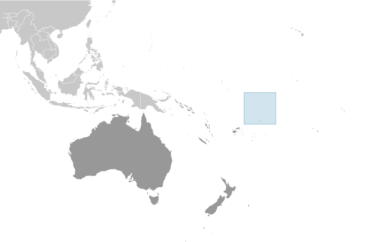
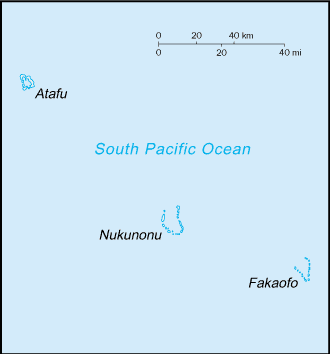
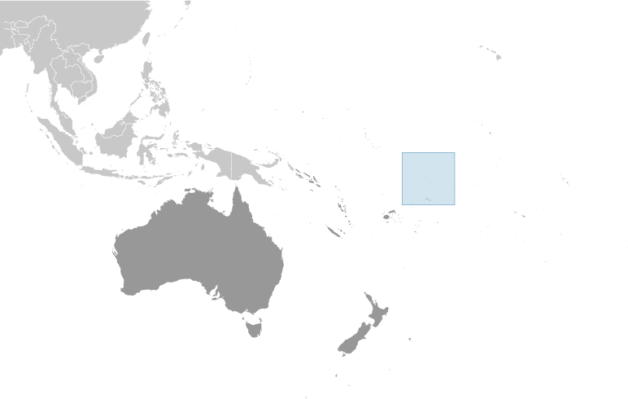
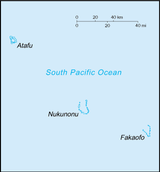

-
Introduction :: Tokelau
-
Background:Originally settled by Polynesian emigrants from surrounding island groups, the Tokelau Islands were made a British protectorate in 1889. They were transferred to New Zealand administration in 1925. Referenda held in 2006 and 2007 to change the status of the islands from that of a New Zealand territory to one of free association with New Zealand did not meet the needed threshold for approval.
-
Geography :: Tokelau
-
Location:Oceania, group of three atolls in the South Pacific Ocean, about one-half of the way from Hawaii to New ZealandGeographic coordinates:9 00 S, 172 00 WMap references:OceaniaArea:total: 12 sq kmland: 12 sq kmwater: 0 sq kmcountry comparison to the world: 242Area - comparative:about 17 times the size of the National Mall in Washington, DCLand boundaries:0 kmCoastline:101 kmMaritime claims:territorial sea: 12 nmexclusive economic zone: 200 nmClimate:tropical; moderated by trade winds (April to November)Terrain:low-lying coral atolls enclosing large lagoonsElevation:0 m lowest point: Pacific Ocean5 highest point: unnamed locationNatural resources:NEGLLand use:agricultural land: 60% (2011 est.)arable land: 0% (2011 est.) / permanent crops: 60% (2011 est.) / permanent pasture: 0% (2011 est.)forest: 0% (2011 est.)other: 40% (2011 est.)Irrigated land:0 sq km (2012)Population distribution:the country's small population is fairly evenly distributed amongst the three atollsNatural hazards:lies in Pacific cyclone beltEnvironment - current issues:overexploitation of certain fish and other marine species, coastal sand, and forest resources; pollution of freshwater lenses and coastal waters from improper disposal of chemicalsGeography - note:consists of three atolls (Atafu, Fakaofo, Nukunonu), each with a lagoon surrounded by a number of reef-bound islets of varying length and rising to over 3 m above sea level
-
People and Society :: Tokelau
-
Population:1,285 (2016 est.)country comparison to the world: 235Nationality:noun: Tokelauan(s)adjective: TokelauanEthnic groups:Tokelauan 64.5%, part Tokelauan/Samoan 9.7%, part Tokelauan/Tuvaluan 2.8%, Tuvaluan 7.5%, Samoan 5.8%, other Pacific islander 3.4%, other 5.6%, unspecified 0.8% (2016 est.)Languages:Tokelauan 88.1% (a Polynesian language), English 48.6%, Samoan 26.7%, Tuvaluan 11.2%, Kiribati 1.5%, other 2.8%, none 2.8%, unspecified 0.8% (2016 ests.)
note: shares sum to more than 100% because some respondents gave more than one answer on the census
Religions:Congregational Christian Church 50.4%, Roman Catholic 38.7%, Presbyterian 5.9%, other Christian 4.2%, unspecified 0.8% (2016 est.)Population growth rate:-0.01% (2014 est.)country comparison to the world: 196Population distribution:the country's small population is fairly evenly distributed amongst the three atollsUrbanization:urban population: 0% of total population (2018)rate of urbanization: 0% annual rate of change (2015-20 est.)Sex ratio:NAInfant mortality rate:total: NAmale: NAfemale: NALife expectancy at birth:total population: NA (2017 est.)male: NA (2017 est.)female: NA (2017 est.)Total fertility rate:NAPhysicians density:2.72 physicians/1,000 population (2010)Drinking water source:improved: rural: 100% of populationtotal: 100% of populationunimproved: rural: 0% of populationtotal: 0% of population (2015 est.)Sanitation facility access:improved: rural: 90.5% of population (2015 est.)total: 90.5% of population (2015 est.)unimproved: rural: 9.5% of population (2015 est.)total: 9.5% of population (2015 est.)HIV/AIDS - adult prevalence rate:NAHIV/AIDS - people living with HIV/AIDS:NAHIV/AIDS - deaths:NAEducation expenditures:NA -
Government :: Tokelau
-
Country name:conventional long form: noneconventional short form: Tokelauformer: Union Islands, Tokelau Islandsetymology: tokelau" is a Polynesian word meaning "north windDependency status:self-administering territory of New Zealand; note - Tokelau and New Zealand have agreed to a draft constitution as Tokelau moves toward free association with New Zealand; a UN-sponsored referendum on self governance in October 2007 did not produce the two-thirds majority vote necessary for changing the political statusGovernment type:parliamentary democratic dependency (General Fono); a territory of New ZealandCapital:UTC+13 (18 hours ahead of Washington, DC during Standard Time)Administrative divisions:none (territory of New Zealand)Independence:none (territory of New Zealand)National holiday:Waitangi Day (Treaty of Waitangi established British sovereignty over New Zealand), 6 February (1840)Constitution:history: many previous; latest effective 1 January 1949 (Tokelau Islands Act 1948) (2018)amendments: proposed as a resolution by the General Fono; passage requires support by each village and approval by the General Fono; amended many times, last in 2007 (2018)Legal system:common law system of New ZealandCitizenship:see New ZealandSuffrage:21 years of age; universalJudicial branch:highest courts: Court of Appeal in New Zealand (consists of the court president and 8 judges sitting in 3- or 5-judge panels, depending on the case)judge selection and term of office: judges nominated by the Judicial Selection Committee and approved by three-quarters majority of the Parliament; judges serve for lifesubordinate courts: High Court, in New Zealand; Council of Elders or TaupulegaExecutive branch:chief of state: Queen ELIZABETH II (since 6 February 1952); represented by Governor General of New Zealand Governor General Dame Patricia Lee REDDY (since 28 September 2016); New Zealand is represented by Administrator Jonathan KINGS (since 30 August 2017)head of government: Afega GAULOFA (since 10 March 2016); note - position rotates annually among the three Faipule (village leaders)cabinet: Council for the Ongoing Government of Tokelau (or Tokelau Council) functions as a cabinet; consists of 3 Faipule (village leaders) and 3 Pulenuku (village mayors)elections/appointments: the monarchy is hereditary; governor general appointed by the monarch; administrator appointed by the Minister of Foreign Affairs and Trade in New Zealand; head of government chosen from the Council of Faipule to serve a 1-year term
note: the meeting place of the Tokelau Council rotates annually among the three atolls; this tradition has given rise to the somewhat misleading description that the capital rotates yearly between the three atolls; in actuality, it is the seat of the government councillors that rotates since Tokelau has no capital
Legislative branch:description: unicameral General Fono (20 seats apportioned by island - Atafu 7, Fakaofo 7, Nukunonu 6; members directly elected by simple majority vote to serve 3-year terms); note - the Tokelau Amendment Act of 1996 confers limited legislative power to the General Fonoelections: last held on 23, 27, and 31 January 2017 depending on island (next to be held in 2020)election results: percent of vote by party - NA; seats by party - independent 20; composition - men 17, women 3, percent of women 15%Political parties and leaders:noneInternational organization participation:PIF (associate member), SPC, UNESCO (associate), UPUDiplomatic representation in the US:none (territory of New Zealand)Diplomatic representation from the US:none (territory of New Zealand)Flag description:a yellow stylized Tokelauan canoe on a dark blue field sails toward the manu - the Southern Cross constellation of four, white, five-pointed stars at the hoist side; the Southern Cross represents the role of Christianity in Tokelauan culture and, in conjunction with the canoe, symbolizes the country navigating into the future; the color yellow indicates happiness and peace, and the blue field represents the ocean on which the community reliesNational symbol(s):tuluma (fishing tackle box); national colors: blue, yellow, whiteNational anthem:name: "Te Atua" (For the Almighty)lyrics/music: unknown/Falani KALOLOnote: adopted 2008; in preparation for eventual self governance, Tokelau held a national contest to choose an anthem; as a territory of New Zealand, "God Defend New Zealand" and "God Save the Queen" are official (see New Zealand)
-
Economy :: Tokelau
-
Economy - overview:
Tokelau's small size (three villages), isolation, and lack of resources greatly restrain economic development and confine agriculture to the subsistence level. The principal sources of revenue are from sales of copra, postage stamps, souvenir coins, and handicrafts. Money is also remitted to families from relatives in New Zealand.
The people rely heavily on aid from New Zealand - about $15 million annually in FY12/13 and FY13/14 - to maintain public services. New Zealand's support amounts to 80% of Tokelau's recurrent government budget. An international trust fund, currently worth nearly $32 million, was established in 2004 by New Zealand to provide Tokelau an independent source of revenue.
GDP (purchasing power parity):$1.5 million (1993 est.)country comparison to the world: 229GDP (official exchange rate):NAGDP - real growth rate:NA
GDP - per capita (PPP):$1,000 (1993 est.)country comparison to the world: 225GDP - composition, by sector of origin:agriculture: NAindustry: NAservices: NAAgriculture - products:coconuts, copra, breadfruit, papayas, bananas; pigs, poultry, goats; fishIndustries:small-scale enterprises for copra production, woodworking, plaited craft goods; stamps, coins; fishingLabor force:440 (2001)country comparison to the world: 231Unemployment rate:NA
Population below poverty line:NABudget:revenues: 430,800 (1987 est.)expenditures: 2.8 million (1987 est.)Fiscal year:1 April - 31 MarchInflation rate (consumer prices):NA
Exports:$0 (2002 est.)country comparison to the world: 224Exports - commodities:stamps, copra, handicraftsImports:$969,200 (2002 est.)country comparison to the world: 223Imports - commodities:foodstuffs, building materials, fuelExchange rates:New Zealand dollars (NZD) per US dollar -1.416 (2017 est.)1.4279 (2016 est.)1.4279 (2015)1.4279 (2014 est.)1.2039 (2013 est.) -
Energy :: Tokelau
-
Crude oil - proved reserves:0 bbl (1 January 2010 est.)country comparison to the world: 205
-
Communications :: Tokelau
-
Telephones - fixed lines:total subscriptions: 300 (July 2016 est.)subscriptions per 100 inhabitants: 21 (July 2016 est.)country comparison to the world: 218Telephone system:general assessment: modern satellite-based communications system (2015)domestic: radiotelephone service between islands (2015)international: country code - 690; radiotelephone service to Samoa; government-regulated telephone service (TeleTok); satellite earth stations - 3 (2015)Broadcast media:Sky TV access for around 30% of the population; each atoll operates a radio service that provides shipping news and weather reports (2011)Internet country code:.tkInternet users:total: 805 (July 2016 est.)percent of population: 60.2% (July 2016 est.)country comparison to the world: 224
-
Transportation :: Tokelau
-
Ports and terminals:none; offshore anchorage only
-
Military and Security :: Tokelau
-
Military - note:defense is the responsibility of New Zealand
-
Transnational Issues :: Tokelau
-
Disputes - international:Tokelau included American Samoa's Swains Island (Olosega) in its 2006 draft independence constitution